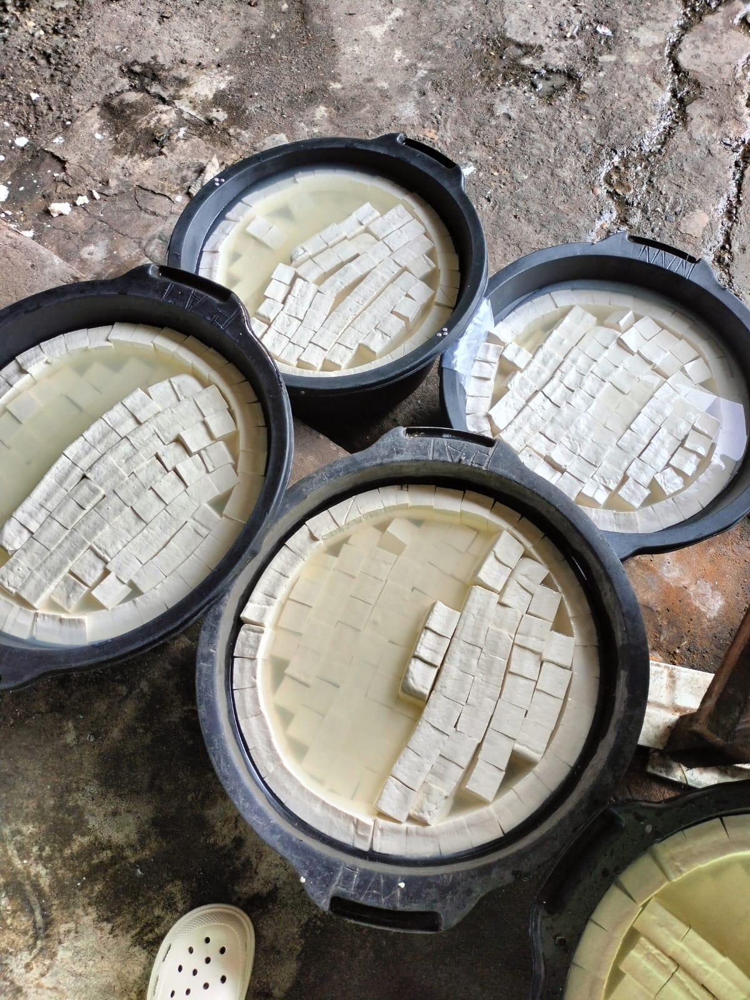

Tahu Putih
Rp75.000/Papan
Tahu segar yang diproses secara tradisional tanpa bahan pengawet.
Pesan SekarangTahu Goreng

Rp75.000/Papan
Tahu goreng renyah siap saji, cocok untuk camilan atau lauk makan.
Pesan SekarangTahu segar yang diproses secara tradisional tanpa bahan pengawet.
Pesan Sekarang
Tahu goreng renyah siap saji, cocok untuk camilan atau lauk makan.
Pesan Sekarang